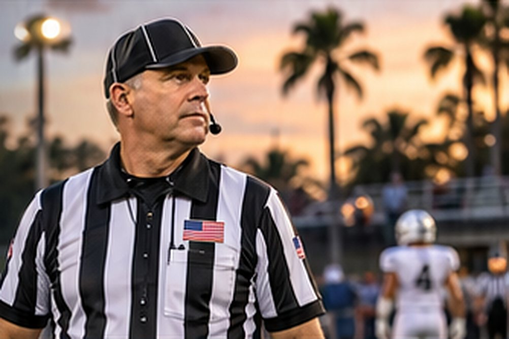
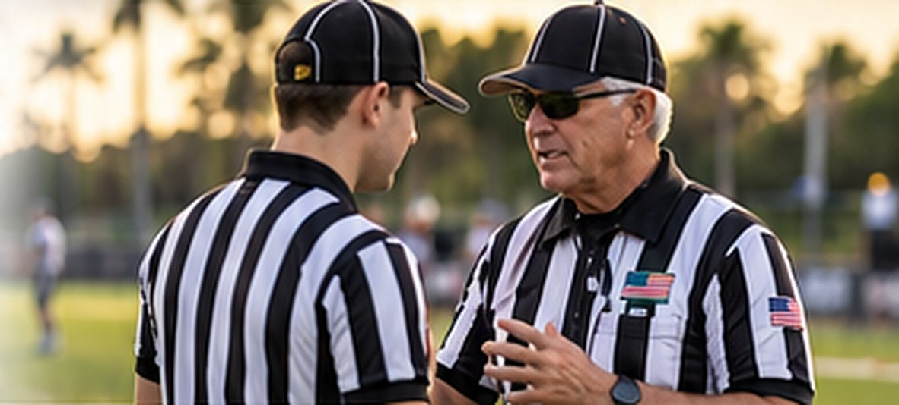
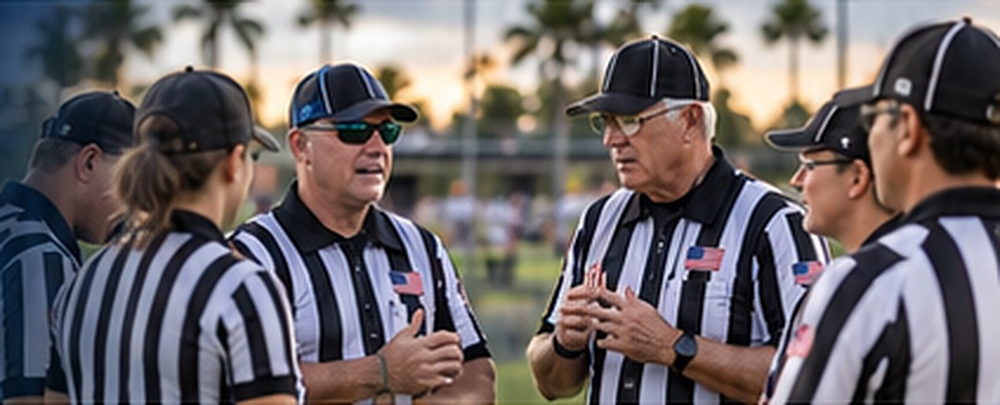
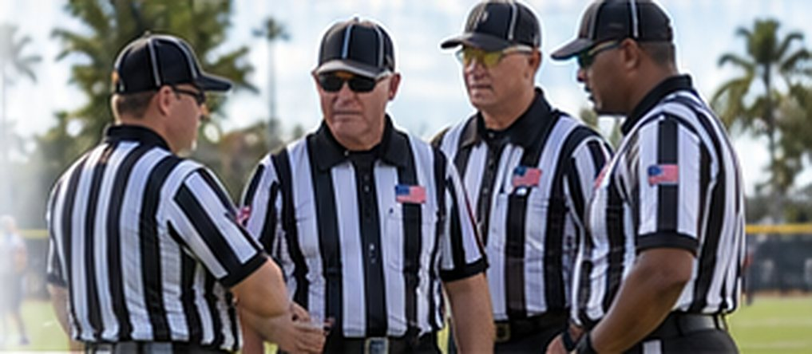
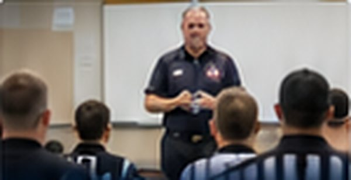
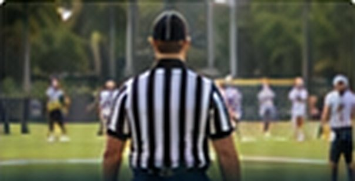
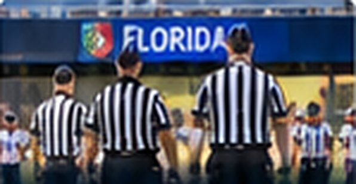
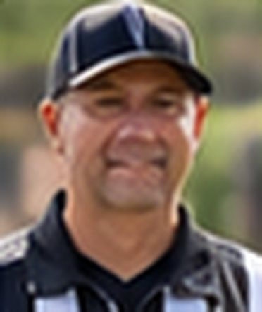
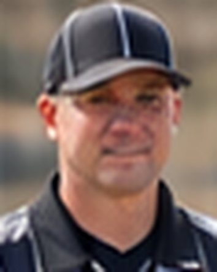
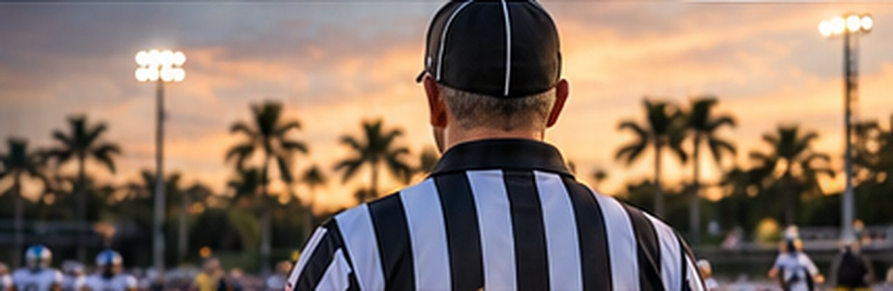

IntegrityOpportunityCommunity
Become a Sports Official
in Southwest Florida
Stay in the game. Learn the craft. Be part of something bigger.
Stay Connected
Be part of the game and stay engaged in your community.
Keep Learning
Build new skills, gain confidence, and challenge yourself.
Join a Community
Work with great people who share your passion for sports.
Make a Difference
Help create a positive, respectful experience for student-athletes.

Never Officiated Before?
You do not need experience. We will teach you.
GNOA welcomes new officials from all backgrounds. Whether you played sports, coached, or simply love the game, we'll provide the training, mentorship, and support you need to get started.
Learn How It WorksTell Us You're Interested
Share a few details and let us know which sports interest you.
Connect With GNOA
We'll reach out with next steps and answer your questions.
Complete Requirements
Finish the necessary registrations, background checks, and sport-specific requirements.
Train and Prepare
Attend training, learn the rules, and work with experienced mentors.
Work Your First Games
Get assigned, gain experience, and start building your officiating career.

Recruit. Train. Develop.
GNOA develops people, not just assigns games. We provide quality training, mentorship, and ongoing development to help you grow your skills and reach your goals as an official.
Be Part of Something Bigger
Already an Experienced Official?
Looking for a new association in Collier County or Southwest Florida?
We welcome experienced officials who are relocating, new to the area, or looking for a strong, supportive association. Bring your experience to GNOA and be part of our community.
Connect With GNOADevelopment and Recognition
From your first game to your biggest assignment.

New Official Training
Local Varsity Game- Playoff Assignment

State Championship Crew
"GNOA gave me the training and support I needed to get started. It's an amazing community of people who truly care."
Sarah M. Sample
Volleyball Official

"Officiating has kept me in the game and connected to the sports I love. GNOA provides great training and opportunities."
Mike T. Sample
Football Official

"I moved to Naples a few years ago and found a home with GNOA. The people, the support, and the opportunities are first class."
David R. Sample
Baseball Official
Do I need experience to get started?
No. You do not need experience. We will teach you. GNOA provides training, mentorship, and support to help you get started, regardless of your background.
What sports can I officiate?
Answer needed from GNOA
How much training is provided?
Answer needed from GNOA
Can I officiate part-time?
Answer needed from GNOA
How do I connect if I already have experience?
Answer needed from GNOA

Experienced Officials
Already an Experienced Official?
Looking for a new association in Collier County or Southwest Florida?
Looking for a New Association in Collier County or Southwest Florida?
We welcome experienced officials who are relocating, new to the area, or looking for a strong, supportive association. Bring your experience to GNOA and be part of our community.
Sample The team supplies the rest of this page's copy in the intake form. Prose keeps their wording, with h2 and h3 subheads, lists and links.
Contact GNOA
- Serving
- Naples • Collier County • Southwest Florida
- From GNOA
- Phone
- From GNOA